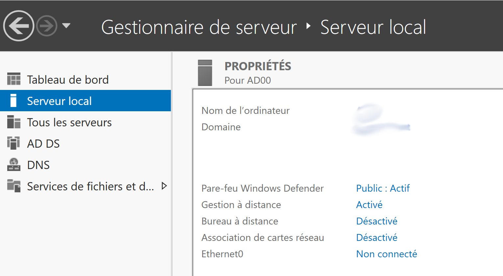
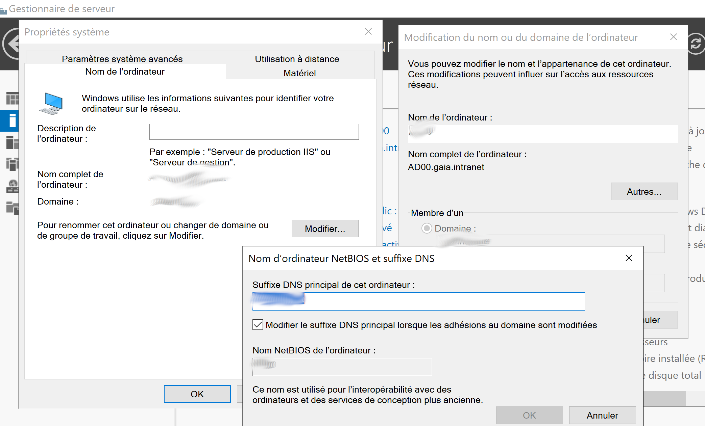
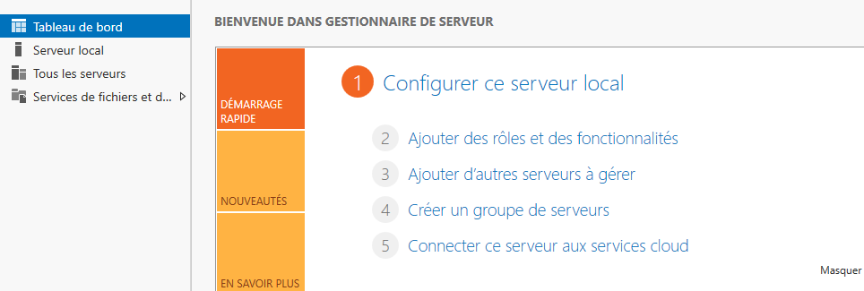
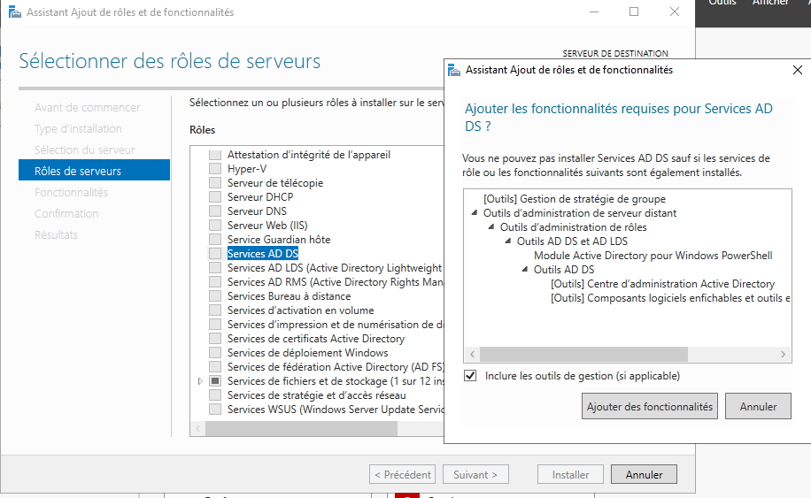
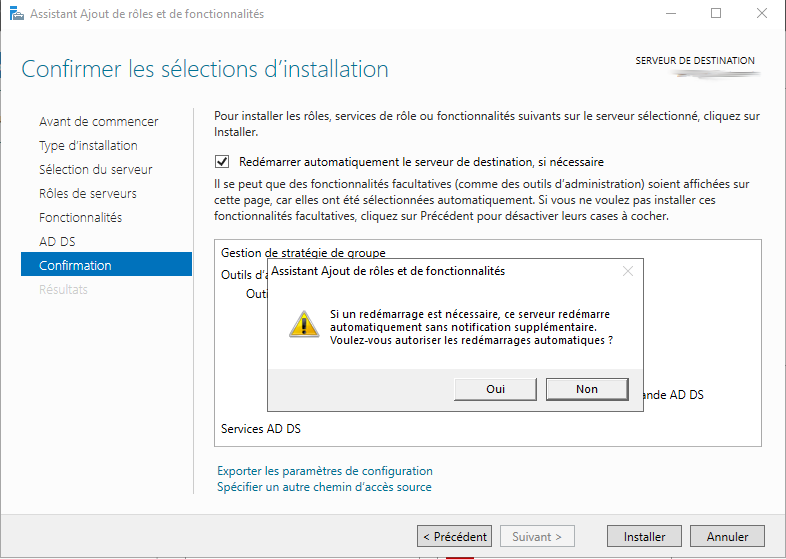
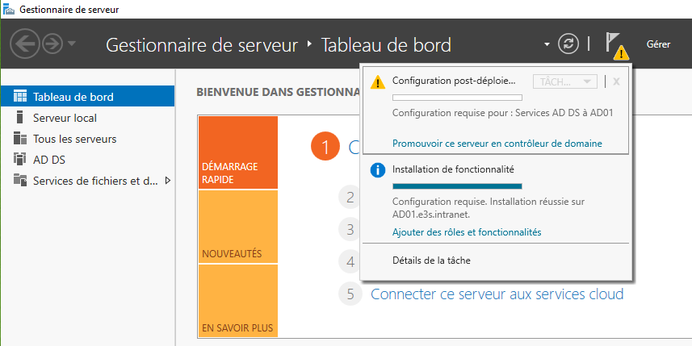
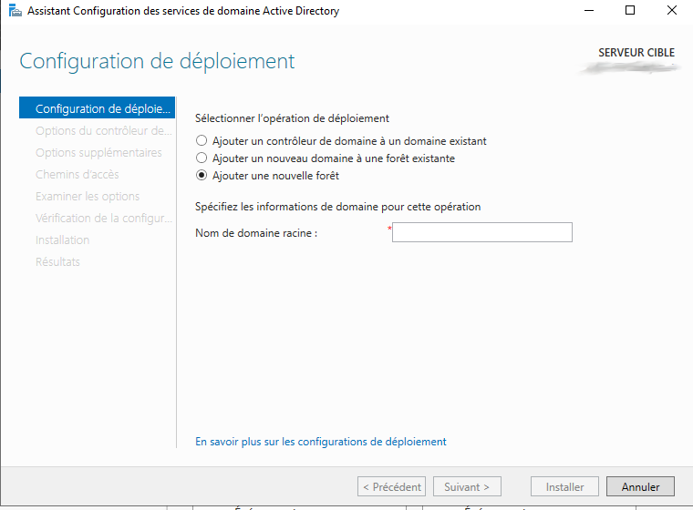

Sébastien C
dimanche 24 octobre 2021
AD Domain Service
Dans cette procédure sera décrite comment:
- Configurer le nom du serveur
- Ajouter le rôle Active Directory Domain Service
- Créer une Unité d’organisation (OU)
- Créer un utilisateur lié à l’OU
Configurer le Serveur
Après avoir installer un nouveau Windows Server ( ici windows 2019 ), ouvrir le Gestionnaire de serveur.
Dans le menu Serveur local, cliquer sur le nom de la machine.
Dans la fenêtre qui s’ouvre, cliquer sur modifier, Attribuer un nom à l’ordinateur, ensuite cliquer sur autre et changer le suffixe DNS de l’ordinateur.

Valider et redémarrer la machine.
Ajouter le rôle Active Directory Domain Service
Dans le Gestionnaire de Serveur, dans le menu Tableau de bord, choisir l’option 2: Ajouter des rôles et des fonctionnalités.

Une fenêtre Assistant de rôles et de fonctionnalités s’ouvre:
- cliquer sur suivant
- installation basée sur un role ou une fonctionnalité
- cliquer sur suivant
- Dans selection de serveur/Pool de serveurs, sélectionner le nom de la machine
- cliquer sur suivant
- Dans Roles de serveurs, sélectionner Services AD DS et Serveur DNS
- Puis cliquer sur Ajouter des fonctionnalités

- cliquer sur suivant 3 fois
- Avant de cliquer sur Installer, dans l’onglet Confirmation, cocher la case redémarrer automatiquement le serveur.

- Une fois l’installation terminée, Dans les notifications du Gestionnaire, cliquer sur promouvoir ce serveur en contrôleur de domaine

Nous allons maintenant configurer les services Actives Directory. Le Domaine sera le domaine racine de l’entreprise.
- Cocher Ajouter une nouvelle forêt
- Dans Nom de Domaine racine, recopier le suffixe DNS de l’ordinateur inscrit dans la partie 1

- Dans l’étape suivante, mettre un mot de passe fort (cf recommandations ANSSi).
- Le reste est à laissé en l’état, passer directement à la Vérification de configuration.
- A cette étape, il ne devrait n’y avoir que des alertes non bloquantes.
- Cliquer sur Installer.
- le redémarrage du serveur est appliqué à la fin de l’installation.
Après quelques minutes de paramétrage, l’écran de connexion affichera désormais le nom NetBIOS du domaine et le compte Administrateur.
Le compte administrateur local de la machine est automatiquement devenu le compte administrateur du domaine.
NB: Pour ce connecter à un domaine il faut saisir soit:
- DOMAINE\Utilisateur.
- utilisateur@domaine.extension.